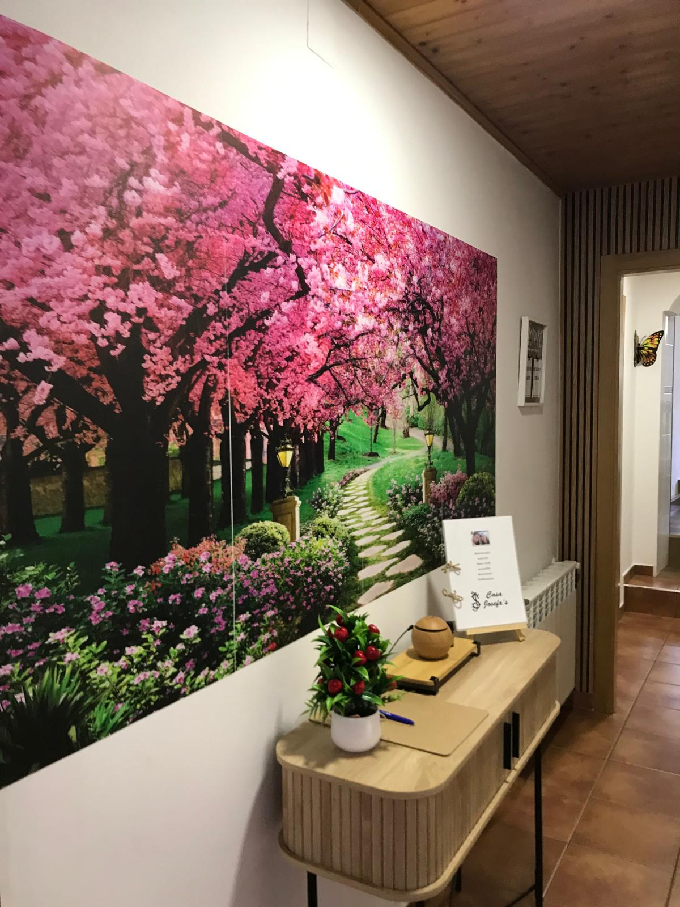
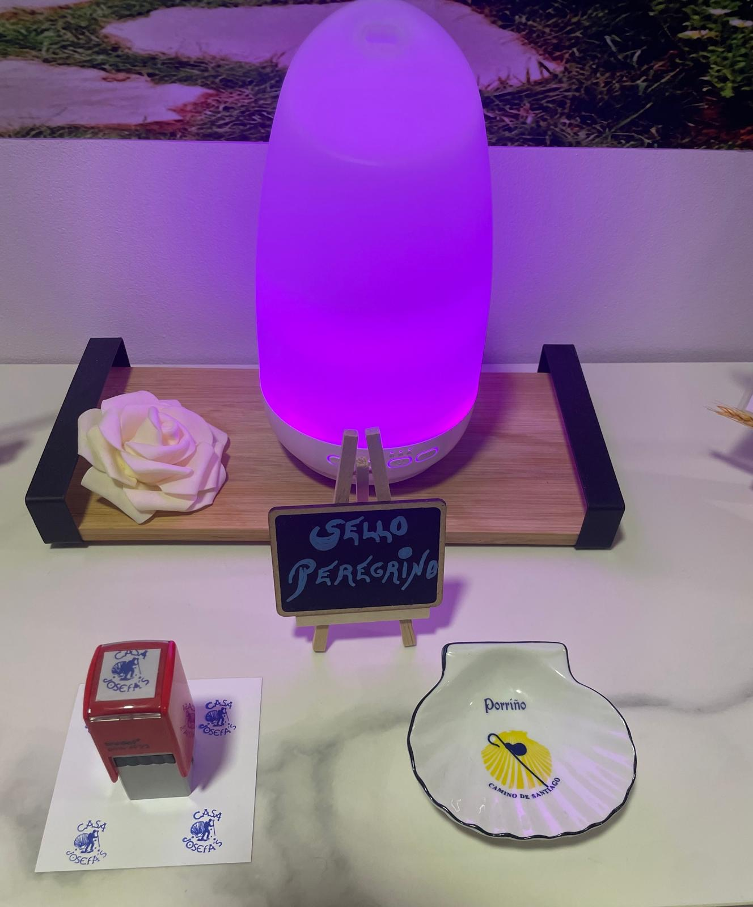
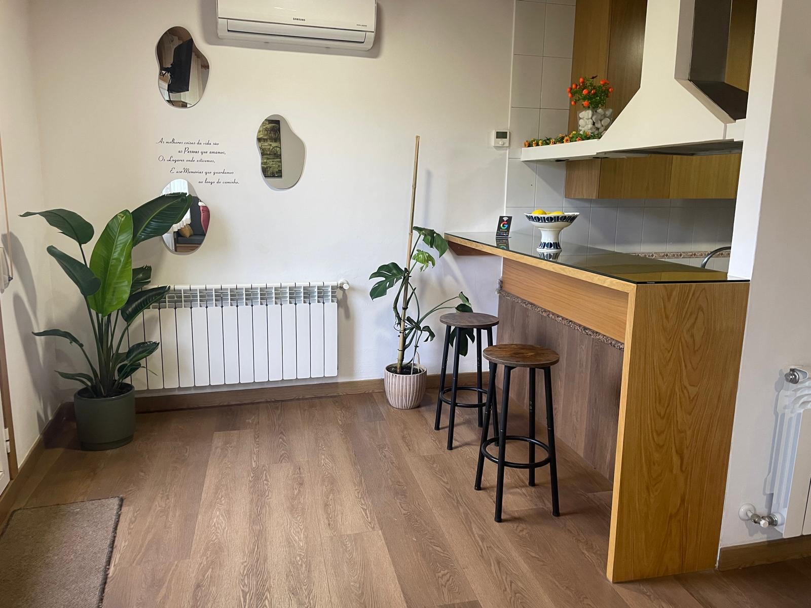
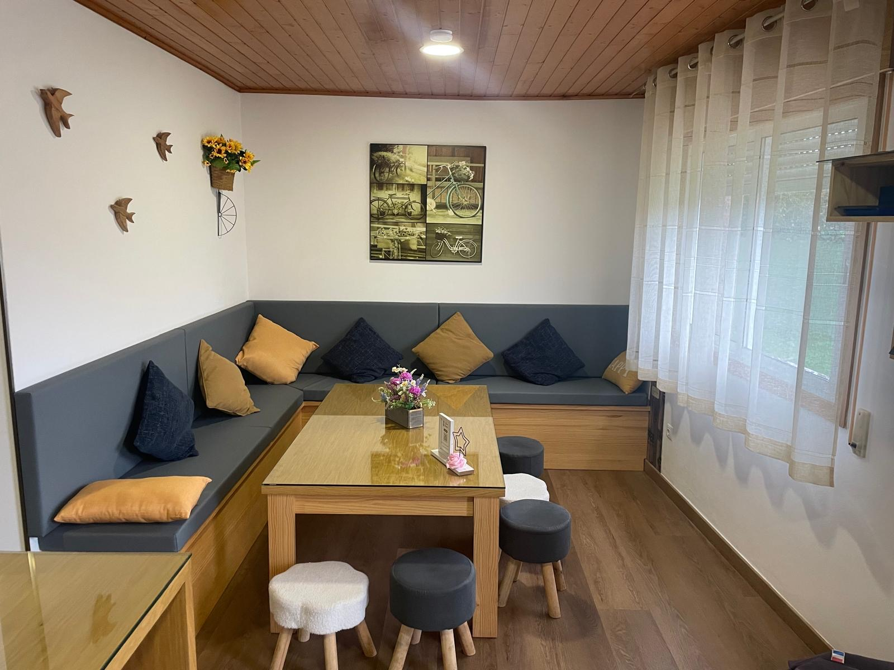
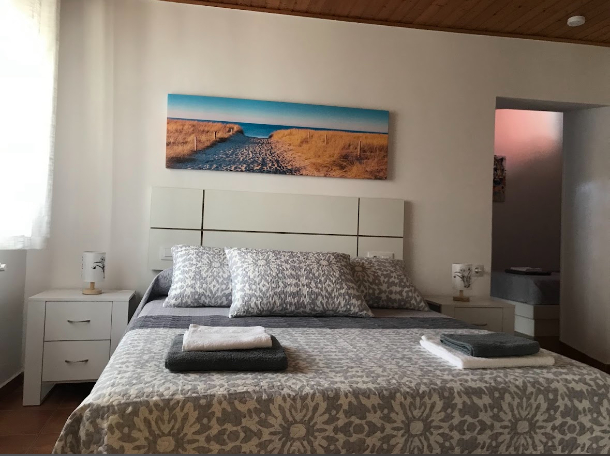
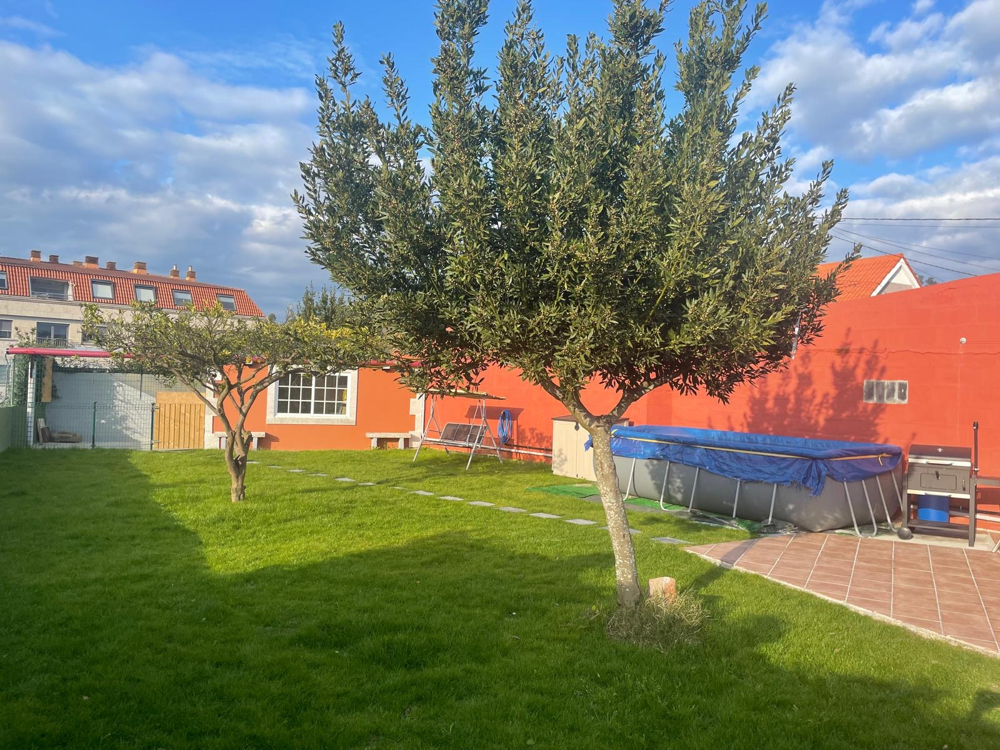
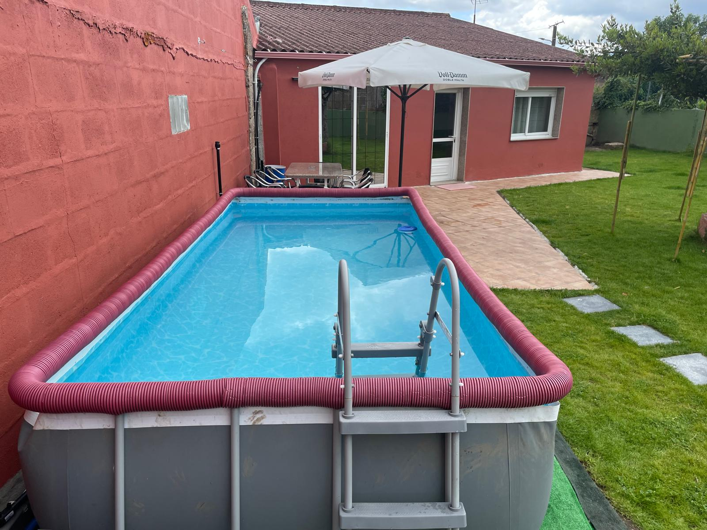

Tu refugio de tranquilidad, confort y naturaleza en O Porriño
Acceder al Registro de ViajerosUbicada en un entorno apacible y perfectamente comunicado, Casa Josefas ofrece un alojamiento vacacional totalmente equipado para familias o pequeños grupos. Cuidamos cada detalle para garantizar una estancia cómoda, combinando estancias cálidas con acabados en madera y todas las comodidades actuales.


La casa dispone de una cocina moderna y completamente equipada integrada de manera fluida con una elegante barra de salón y una zona de comedor con bancos acolchados, ideal para compartir momentos únicos en buena compañía[cite: 5, 54, 55].


Disponemos de habitaciones amplias, luminosas y provistas de ropa de cama de alta calidad, armarios espaciosos y un ambiente sumamente acogedor para asegurar el mejor descanso[cite: 16].

Disfruta al aire libre de nuestro magnífico jardín privado y de la piscina rectangular totalmente equipada con zona de descanso[cite: 14, 48].


Si ya cuentas con tu reserva confirmada con nosotros, por favor completa el formulario obligatorio de parte de viajeros antes de tu llegada para agilizar los trámites reglamentarios.
Rellenar Formulario de Registro